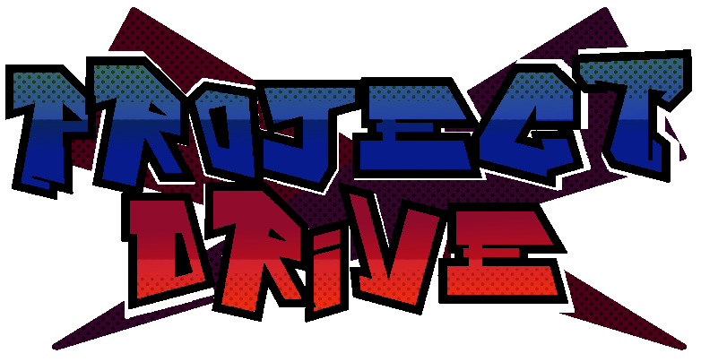
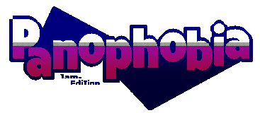
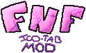
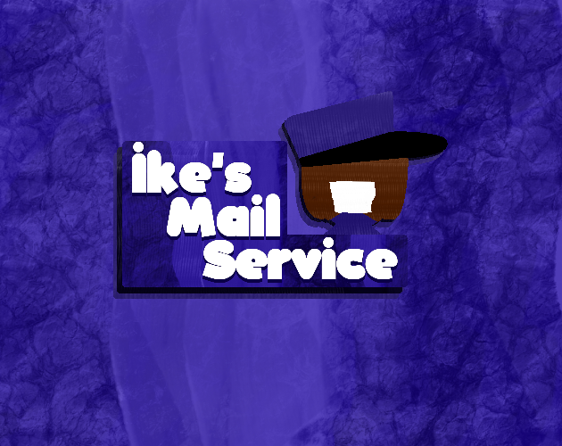
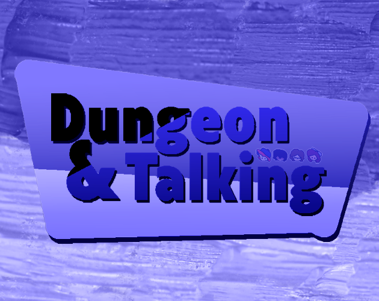

Hello site visitor number 69,420
My nickname is PyroGuy and I love coding games
in GameMaker and C++ (Although I'm not good at it)
I made this website to showcase my projects
“Thanks Myrick for the art”
Gamer Pro Tip:
Click to Game Logo To Download it
 Project Drive was a graduation project for one of my friends. As a result, in a month we made a platformer inspired by Wario Land 4 and Pizza Tower. In this project, I coded the movement of the character for a very long time and at that time it was really good, now I understand what I can do better. As a result, due to bad game design and unfinished movement, the development of the game was abandoned, and as a result, the source code of the game was lost, and with it the English version of the game, only Russian remained.
 Panophobia (fear of everything) - was a game for Bare Jams Spring 2023 with "randomly generated rooms" that change when you exit them. The gameplay of the game consists in the passage of a huge cave, consisting of randomly selected rooms, forming a network of levels in which the game takes place. Before the game, the player has a choice between three fears. In the future, we plan to rewrite and expand the game
 “FNF FREE DOWNLOAD Ico Tab Mod” is not just another stupid and boring FNF mod. This is a FNF mod FREE DOWNLOAD parody of FNF made by Tyler mon on GameMaker. I especially like the style of this game which was painted in Paint and looks amazing. Also for this mod, I heavily remade the original game,which later became a separate engine created to simplify the creation of mods I think this project is my favorite.
 Ike's Mail Service - was created for GMTK Game Jam 2022 and is my first GameMaker project. The game is a random clicker. Although now I understand how boring the game is, but for my first game made in 48 hours, it is not bad
 Dungeon & Talking - made for GMTK Game Jam 2023 and is the ugly duckling of my career as I didn't make it in 48 hours. In the game, you played as a Gamemaster. Communicating with players, you watched how they fought monsters and made decisions on a random basis. Although it was not finished, I am proud that I was able to write a primitive artificial intelligence that could make decisions depending on its character.